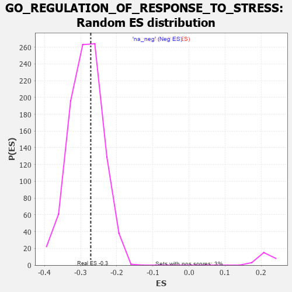

| | | Dataset | 7d |
| Phenotype | NoPhenotypeAvailable |
| Upregulated in class | na_neg |
| GeneSet | GO_REGULATION_OF_RESPONSE_TO_STRESS |
| Enrichment Score (ES) | -0.27204394 |
| Normalized Enrichment Score (NES) | -0.95247537 |
| Nominal p-value | 0.61498976 |
| FDR q-value | 0.90695184 |
| FWER p-Value | 1.0 |
Table: GSEA Results Summary
 Fig 1: Enrichment plot: GO_REGULATION_OF_RESPONSE_TO_STRESS
Fig 1: Enrichment plot: GO_REGULATION_OF_RESPONSE_TO_STRESS
Profile of the Running ES Score & Positions of GeneSet Members on the Rank Ordered List
| PROBE | GENE SYMBOL | GENE_TITLE | RANK IN GENE LIST | RANK METRIC SCORE | RUNNING ES | CORE ENRICHMENT | | 1 | H2AX | | | 20 | 4.738 | 0.0302 | No |
| 2 | UBE2K | | | 94 | 1.739 | 0.0327 | No |
| 3 | ADCY8 | | | 124 | 1.418 | 0.0388 | No |
| 4 | AXIN1 | | | 166 | 1.159 | 0.0415 | No |
| 5 | FOXF1 | | | 176 | 1.136 | 0.0482 | No |
| 6 | WNT16 | | | 198 | 1.072 | 0.0529 | No |
| 7 | DCST1 | | | 237 | 0.959 | 0.0545 | No |
| 8 | HGF | | | 276 | 0.870 | 0.0556 | No |
| 9 | NUP85 | | | 329 | 0.772 | 0.0542 | No |
| 10 | CNOT7 | | | 348 | 0.750 | 0.0571 | No |
| 11 | AXIN2 | | | 383 | 0.713 | 0.0576 | No |
| 12 | BAX | | | 387 | 0.711 | 0.0621 | No |
| 13 | RAD9A | | | 418 | 0.681 | 0.0629 | No |
| 14 | ERCC1 | | | 453 | 0.660 | 0.0631 | No |
| 15 | LRP1 | | | 470 | 0.648 | 0.0655 | No |
| 16 | NUP54 | | | 505 | 0.627 | 0.0654 | No |
| 17 | THOC1 | | | 507 | 0.627 | 0.0696 | No |
| 18 | HTRA2 | | | 527 | 0.621 | 0.0714 | No |
| 19 | PKN1 | | | 535 | 0.619 | 0.0748 | No |
| 20 | XRCC6 | | | 694 | 0.560 | 0.0581 | No |
| 21 | VASH1 | | | 712 | 0.556 | 0.0597 | No |
| 22 | RPA1 | | | 817 | 0.527 | 0.0499 | No |
| 23 | RAE1 | | | 827 | 0.524 | 0.0523 | No |
| 24 | RFWD3 | | | 843 | 0.521 | 0.0540 | No |
| 25 | RPA2 | | | 851 | 0.519 | 0.0566 | No |
| 26 | AMFR | | | 856 | 0.518 | 0.0597 | No |
| 27 | IGBP1 | | | 869 | 0.514 | 0.0617 | No |
| 28 | PARG | | | 884 | 0.509 | 0.0634 | No |
| 29 | HMGB2 | | | 892 | 0.507 | 0.0660 | No |
| 30 | STOX1 | | | 905 | 0.506 | 0.0680 | No |
| 31 | ARMT1 | | | 924 | 0.501 | 0.0691 | No |
| 32 | MATR3 | | | 937 | 0.498 | 0.0710 | No |
| 33 | PDCD4 | | | 941 | 0.497 | 0.0740 | No |
| 34 | DVL3 | | | 971 | 0.490 | 0.0736 | No |
| 35 | MEN1 | | | 1003 | 0.483 | 0.0729 | No |
| 36 | HMGB4 | | | 1008 | 0.482 | 0.0758 | No |
| 37 | AKT1 | | | 1040 | 0.476 | 0.0750 | No |
| 38 | TAF9 | | | 1046 | 0.475 | 0.0777 | No |
| 39 | MEF2C | | | 1054 | 0.473 | 0.0800 | No |
| 40 | FZD10 | | | 1065 | 0.470 | 0.0820 | No |
| 41 | WDR70 | | | 1066 | 0.470 | 0.0852 | No |
| 42 | DEK | | | 1088 | 0.466 | 0.0857 | No |
| 43 | RAD51 | | | 1090 | 0.466 | 0.0888 | No |
| 44 | RINT1 | | | 1110 | 0.462 | 0.0895 | No |
| 45 | NUP93 | | | 1127 | 0.459 | 0.0906 | No |
| 46 | SRC | | | 1128 | 0.459 | 0.0938 | No |
| 47 | NCK2 | | | 1131 | 0.458 | 0.0967 | No |
| 48 | PSMD7 | | | 1152 | 0.454 | 0.0973 | No |
| 49 | NUP43 | | | 1160 | 0.453 | 0.0995 | No |
| 50 | PSMD2 | | | 1181 | 0.450 | 0.1000 | No |
| 51 | KAT7 | | | 1240 | 0.440 | 0.0955 | No |
| 52 | FKBP4 | | | 1390 | 0.412 | 0.0790 | No |
| 53 | NUP88 | | | 1429 | 0.404 | 0.0768 | No |
| 54 | FZD1 | | | 1574 | 0.379 | 0.0607 | No |
| 55 | ERP29 | | | 1589 | 0.376 | 0.0615 | No |
| 56 | DERL2 | | | 1632 | 0.368 | 0.0586 | No |
| 57 | HYOU1 | | | 1692 | 0.358 | 0.0534 | No |
| 58 | ERCC8 | | | 1699 | 0.357 | 0.0550 | No |
| 59 | MRNIP | | | 1743 | 0.346 | 0.0518 | No |
| 60 | NUP58 | | | 1787 | 0.340 | 0.0486 | No |
| 61 | PSMD4 | | | 1811 | 0.335 | 0.0479 | No |
| 62 | ABR | | | 1812 | 0.335 | 0.0503 | No |
| 63 | FMR1 | | | 1816 | 0.334 | 0.0522 | No |
| 64 | GATA4 | | | 1837 | 0.330 | 0.0519 | No |
| 65 | TRIM5 | | | 1852 | 0.327 | 0.0523 | No |
| 66 | OTUB1 | | | 1857 | 0.326 | 0.0540 | No |
| 67 | PSMD6 | | | 1858 | 0.326 | 0.0563 | No |
| 68 | NUP62 | | | 1871 | 0.324 | 0.0570 | No |
| 69 | PAK3 | | | 1889 | 0.322 | 0.0570 | No |
| 70 | MMS19 | | | 1924 | 0.317 | 0.0548 | No |
| 71 | HACD3 | | | 1932 | 0.315 | 0.0560 | No |
| 72 | MICU1 | | | 1954 | 0.313 | 0.0555 | No |
| 73 | BRSK2 | | | 1979 | 0.308 | 0.0545 | No |
| 74 | POLH | | | 1983 | 0.307 | 0.0562 | No |
| 75 | GPX4 | | | 1989 | 0.306 | 0.0577 | No |
| 76 | RAF1 | | | 2011 | 0.303 | 0.0570 | No |
| 77 | BMP7 | | | 2107 | 0.290 | 0.0467 | No |
| 78 | PSME4 | | | 2143 | 0.285 | 0.0441 | No |
| 79 | SYK | | | 2186 | 0.278 | 0.0406 | No |
| 80 | C1QBP | | | 2189 | 0.278 | 0.0422 | No |
| 81 | ATAD5 | | | 2197 | 0.277 | 0.0432 | No |
| 82 | TRAP1 | | | 2219 | 0.274 | 0.0424 | No |
| 83 | PSMF1 | | | 2251 | 0.268 | 0.0402 | No |
| 84 | XRCC1 | | | 2287 | 0.262 | 0.0375 | No |
| 85 | REST | | | 2308 | 0.259 | 0.0367 | No |
| 86 | SEC13 | | | 2330 | 0.256 | 0.0357 | No |
| 87 | ANO6 | | | 2339 | 0.255 | 0.0364 | No |
| 88 | MIF | | | 2357 | 0.252 | 0.0360 | No |
| 89 | SIN3A | | | 2361 | 0.251 | 0.0373 | No |
| 90 | HIPK2 | | | 2389 | 0.247 | 0.0355 | No |
| 91 | MET | | | 2430 | 0.240 | 0.0320 | No |
| 92 | KDM1A | | | 2447 | 0.237 | 0.0315 | No |
| 93 | UBXN1 | | | 2467 | 0.232 | 0.0307 | No |
| 94 | UBAC2 | | | 2488 | 0.229 | 0.0296 | No |
| 95 | PSMD5 | | | 2560 | 0.218 | 0.0219 | No |
| 96 | EMC10 | | | 2607 | 0.211 | 0.0174 | No |
| 97 | BAG3 | | | 2620 | 0.209 | 0.0173 | No |
| 98 | NUP50 | | | 2625 | 0.209 | 0.0182 | No |
| 99 | PUM2 | | | 2627 | 0.209 | 0.0195 | No |
| 100 | ARID2 | | | 2664 | 0.204 | 0.0162 | No |
| 101 | SASH1 | | | 2682 | 0.201 | 0.0154 | No |
| 102 | RORA | | | 2730 | 0.193 | 0.0106 | No |
| 103 | CUL1 | | | 2735 | 0.193 | 0.0115 | No |
| 104 | NSD2 | | | 2784 | 0.185 | 0.0065 | No |
| 105 | ATR | | | 2800 | 0.183 | 0.0058 | No |
| 106 | NEK4 | | | 2915 | 0.164 | -0.0079 | No |
| 107 | BTK | | | 2958 | 0.156 | -0.0123 | No |
| 108 | RTEL1 | | | 3010 | 0.148 | -0.0179 | No |
| 109 | ULK4 | | | 3022 | 0.146 | -0.0183 | No |
| 110 | WNT4 | | | 3023 | 0.146 | -0.0173 | No |
| 111 | PIAS4 | | | 3034 | 0.145 | -0.0176 | No |
| 112 | UFL1 | | | 3041 | 0.144 | -0.0174 | No |
| 113 | ABCE1 | | | 3051 | 0.143 | -0.0176 | No |
| 114 | PROS1 | | | 3070 | 0.141 | -0.0189 | No |
| 115 | TIGAR | | | 3091 | 0.138 | -0.0206 | No |
| 116 | CUL4A | | | 3097 | 0.137 | -0.0203 | No |
| 117 | RREB1 | | | 3099 | 0.137 | -0.0195 | No |
| 118 | GPX1 | | | 3109 | 0.135 | -0.0197 | No |
| 119 | OGG1 | | | 3135 | 0.132 | -0.0220 | No |
| 120 | EDEM2 | | | 3145 | 0.131 | -0.0223 | No |
| 121 | ERN2 | | | 3160 | 0.129 | -0.0232 | No |
| 122 | GCH1 | | | 3166 | 0.127 | -0.0230 | No |
| 123 | PSMD9 | | | 3179 | 0.125 | -0.0237 | No |
| 124 | AP1G1 | | | 3210 | 0.121 | -0.0268 | No |
| 125 | NUP98 | | | 3261 | 0.112 | -0.0325 | No |
| 126 | SMAD3 | | | 3303 | 0.105 | -0.0371 | No |
| 127 | TLDC2 | | | 3349 | 0.097 | -0.0423 | No |
| 128 | TAB1 | | | 3351 | 0.097 | -0.0418 | No |
| 129 | MED1 | | | 3405 | 0.089 | -0.0480 | No |
| 130 | SETD6 | | | 3420 | 0.087 | -0.0493 | No |
| 131 | UBR5 | | | 3518 | 0.074 | -0.0614 | No |
| 132 | PQBP1 | | | 3526 | 0.072 | -0.0618 | No |
| 133 | HDAC3 | | | 3528 | 0.072 | -0.0614 | No |
| 134 | FUT8 | | | 3551 | 0.067 | -0.0638 | No |
| 135 | MAPK3 | | | 3589 | 0.062 | -0.0682 | No |
| 136 | STK25 | | | 3602 | 0.059 | -0.0693 | No |
| 137 | SKP1 | | | 3663 | 0.049 | -0.0768 | No |
| 138 | ABCD1 | | | 3677 | 0.047 | -0.0782 | No |
| 139 | DHX9 | | | 3693 | 0.044 | -0.0798 | No |
| 140 | HSF1 | | | 3718 | 0.039 | -0.0827 | No |
| 141 | DAXX | | | 3722 | 0.038 | -0.0828 | No |
| 142 | SYT11 | | | 3732 | 0.036 | -0.0837 | No |
| 143 | SBNO2 | | | 3774 | 0.032 | -0.0888 | No |
| 144 | SMG1 | | | 3843 | 0.021 | -0.0975 | No |
| 145 | FEM1A | | | 3847 | 0.021 | -0.0978 | No |
| 146 | NCOR1 | | | 3961 | 0.000 | -0.1125 | No |
| 147 | IGF1R | | | 3970 | -0.002 | -0.1135 | No |
| 148 | EYA1 | | | 3987 | -0.006 | -0.1156 | No |
| 149 | VPS35 | | | 3989 | -0.006 | -0.1156 | No |
| 150 | DDX58 | | | 3998 | -0.007 | -0.1166 | No |
| 151 | PARP1 | | | 4014 | -0.010 | -0.1185 | No |
| 152 | MCPH1 | | | 4039 | -0.014 | -0.1215 | No |
| 153 | DDAH1 | | | 4056 | -0.016 | -0.1235 | No |
| 154 | SFRP2 | | | 4065 | -0.018 | -0.1244 | No |
| 155 | FICD | | | 4087 | -0.022 | -0.1270 | No |
| 156 | PDE8A | | | 4097 | -0.023 | -0.1280 | No |
| 157 | CHID1 | | | 4099 | -0.023 | -0.1280 | No |
| 158 | TRAF1 | | | 4104 | -0.024 | -0.1283 | No |
| 159 | MTOR | | | 4114 | -0.025 | -0.1293 | No |
| 160 | ABL1 | | | 4125 | -0.027 | -0.1305 | No |
| 161 | CRK | | | 4139 | -0.031 | -0.1319 | No |
| 162 | PDX1 | | | 4179 | -0.038 | -0.1367 | No |
| 163 | SESN1 | | | 4192 | -0.041 | -0.1380 | No |
| 164 | GGT7 | | | 4200 | -0.041 | -0.1386 | No |
| 165 | RPTOR | | | 4252 | -0.050 | -0.1449 | No |
| 166 | PSME3 | | | 4280 | -0.056 | -0.1481 | No |
| 167 | USF1 | | | 4296 | -0.059 | -0.1496 | No |
| 168 | BAG4 | | | 4314 | -0.061 | -0.1514 | No |
| 169 | CD109 | | | 4325 | -0.064 | -0.1522 | No |
| 170 | OPA1 | | | 4330 | -0.065 | -0.1523 | No |
| 171 | SETD2 | | | 4443 | -0.084 | -0.1663 | No |
| 172 | CDC37 | | | 4446 | -0.084 | -0.1660 | No |
| 173 | SYVN1 | | | 4454 | -0.085 | -0.1663 | No |
| 174 | ERCC6 | | | 4464 | -0.087 | -0.1669 | No |
| 175 | LRRK2 | | | 4467 | -0.087 | -0.1665 | No |
| 176 | BAG6 | | | 4563 | -0.108 | -0.1781 | No |
| 177 | PNKP | | | 4572 | -0.111 | -0.1784 | No |
| 178 | CMA1 | | | 4580 | -0.114 | -0.1785 | No |
| 179 | ADTRP | | | 4612 | -0.120 | -0.1817 | No |
| 180 | GATA3 | | | 4614 | -0.120 | -0.1810 | No |
| 181 | LETM1 | | | 4644 | -0.127 | -0.1839 | No |
| 182 | MYLK | | | 4651 | -0.128 | -0.1838 | No |
| 183 | TERT | | | 4801 | -0.157 | -0.2021 | No |
| 184 | TNIK | | | 4804 | -0.158 | -0.2013 | No |
| 185 | FBXW7 | | | 4816 | -0.161 | -0.2016 | No |
| 186 | TAOK3 | | | 4823 | -0.162 | -0.2013 | No |
| 187 | DLG1 | | | 4860 | -0.169 | -0.2048 | No |
| 188 | CLU | | | 4889 | -0.174 | -0.2072 | No |
| 189 | VAMP8 | | | 4905 | -0.179 | -0.2079 | No |
| 190 | CASP1 | | | 4932 | -0.185 | -0.2100 | No |
| 191 | FZD4 | | | 4940 | -0.186 | -0.2097 | No |
| 192 | EP300 | | | 4941 | -0.186 | -0.2084 | No |
| 193 | XRCC5 | | | 4946 | -0.187 | -0.2076 | No |
| 194 | PRKDC | | | 4955 | -0.189 | -0.2073 | No |
| 195 | KLF4 | | | 5005 | -0.198 | -0.2123 | No |
| 196 | PDPK1 | | | 5043 | -0.207 | -0.2157 | No |
| 197 | EFHD1 | | | 5057 | -0.211 | -0.2159 | No |
| 198 | PLD3 | | | 5059 | -0.212 | -0.2146 | No |
| 199 | DRD2 | | | 5088 | -0.221 | -0.2167 | No |
| 200 | DDX11 | | | 5102 | -0.225 | -0.2169 | No |
| 201 | MMP9 | | | 5108 | -0.227 | -0.2159 | No |
| 202 | HDAC6 | | | 5183 | -0.244 | -0.2239 | No |
| 203 | ENPP4 | | | 5189 | -0.245 | -0.2228 | No |
| 204 | ASH1L | | | 5203 | -0.248 | -0.2228 | No |
| 205 | ATM | | | 5210 | -0.249 | -0.2218 | No |
| 206 | GPR4 | | | 5219 | -0.250 | -0.2212 | No |
| 207 | PTEN | | | 5262 | -0.261 | -0.2248 | No |
| 208 | EPHA4 | | | 5273 | -0.265 | -0.2243 | No |
| 209 | CD9 | | | 5319 | -0.277 | -0.2282 | No |
| 210 | FZD5 | | | 5386 | -0.292 | -0.2348 | No |
| 211 | PPM1B | | | 5422 | -0.300 | -0.2373 | No |
| 212 | LRIG2 | | | 5460 | -0.310 | -0.2399 | No |
| 213 | ACOX2 | | | 5461 | -0.310 | -0.2378 | No |
| 214 | FABP4 | | | 5509 | -0.322 | -0.2417 | No |
| 215 | PCBP2 | | | 5539 | -0.331 | -0.2432 | No |
| 216 | EDEM1 | | | 5541 | -0.331 | -0.2410 | No |
| 217 | SPHK1 | | | 5576 | -0.339 | -0.2431 | No |
| 218 | SMYD2 | | | 5598 | -0.344 | -0.2434 | No |
| 219 | ROR2 | | | 5626 | -0.353 | -0.2445 | No |
| 220 | PSMD1 | | | 5674 | -0.367 | -0.2481 | No |
| 221 | TLR2 | | | 5761 | -0.395 | -0.2565 | No |
| 222 | VAMP7 | | | 5777 | -0.399 | -0.2557 | No |
| 223 | LAMP1 | | | 5796 | -0.404 | -0.2553 | No |
| 224 | ADA | | | 5798 | -0.405 | -0.2526 | No |
| 225 | SNX4 | | | 5834 | -0.415 | -0.2543 | No |
| 226 | TKFC | | | 5854 | -0.419 | -0.2538 | No |
| 227 | ATG7 | | | 5858 | -0.420 | -0.2513 | No |
| 228 | SZT2 | | | 5882 | -0.429 | -0.2513 | No |
| 229 | TTBK1 | | | 5969 | -0.460 | -0.2593 | No |
| 230 | XBP1 | | | 6011 | -0.475 | -0.2614 | No |
| 231 | TRPC3 | | | 6035 | -0.483 | -0.2610 | No |
| 232 | FZD8 | | | 6051 | -0.490 | -0.2596 | No |
| 233 | DBNL | | | 6084 | -0.501 | -0.2603 | No |
| 234 | RNF8 | | | 6147 | -0.518 | -0.2648 | No |
| 235 | RAG1 | | | 6176 | -0.530 | -0.2648 | No |
| 236 | RGN | | | 6233 | -0.547 | -0.2683 | Yes |
| 237 | CDC42 | | | 6236 | -0.548 | -0.2647 | Yes |
| 238 | HSBP1 | | | 6273 | -0.562 | -0.2655 | Yes |
| 239 | STK39 | | | 6274 | -0.563 | -0.2616 | Yes |
| 240 | SYTL4 | | | 6304 | -0.578 | -0.2614 | Yes |
| 241 | BIRC3 | | | 6366 | -0.603 | -0.2652 | Yes |
| 242 | UBE2N | | | 6407 | -0.621 | -0.2661 | Yes |
| 243 | HSPB8 | | | 6408 | -0.621 | -0.2618 | Yes |
| 244 | MALT1 | | | 6432 | -0.634 | -0.2604 | Yes |
| 245 | TRPV4 | | | 6515 | -0.668 | -0.2664 | Yes |
| 246 | KANK1 | | | 6536 | -0.678 | -0.2643 | Yes |
| 247 | STK24 | | | 6550 | -0.684 | -0.2613 | Yes |
| 248 | OTOP1 | | | 6562 | -0.690 | -0.2579 | Yes |
| 249 | CLN3 | | | 6580 | -0.699 | -0.2553 | Yes |
| 250 | TPR | | | 6597 | -0.709 | -0.2525 | Yes |
| 251 | PTPRS | | | 6646 | -0.738 | -0.2536 | Yes |
| 252 | CERS2 | | | 6689 | -0.756 | -0.2538 | Yes |
| 253 | PAK1 | | | 6691 | -0.757 | -0.2487 | Yes |
| 254 | EGFR | | | 6708 | -0.765 | -0.2455 | Yes |
| 255 | GSK3B | | | 6719 | -0.768 | -0.2415 | Yes |
| 256 | MGLL | | | 6842 | -0.838 | -0.2516 | Yes |
| 257 | PTPRF | | | 6908 | -0.872 | -0.2540 | Yes |
| 258 | LRP8 | | | 6931 | -0.889 | -0.2507 | Yes |
| 259 | GHSR | | | 6937 | -0.894 | -0.2452 | Yes |
| 260 | PDE2A | | | 6985 | -0.927 | -0.2449 | Yes |
| 261 | CCR2 | | | 7003 | -0.939 | -0.2406 | Yes |
| 262 | DDX5 | | | 7152 | -1.037 | -0.2527 | Yes |
| 263 | UFD1 | | | 7157 | -1.040 | -0.2460 | Yes |
| 264 | KLKB1 | | | 7216 | -1.090 | -0.2460 | Yes |
| 265 | CDK9 | | | 7266 | -1.138 | -0.2445 | Yes |
| 266 | PARP3 | | | 7289 | -1.158 | -0.2393 | Yes |
| 267 | GRN | | | 7319 | -1.194 | -0.2348 | Yes |
| 268 | CYLD | | | 7333 | -1.206 | -0.2282 | Yes |
| 269 | GGT1 | | | 7447 | -1.329 | -0.2337 | Yes |
| 270 | SHPK | | | 7469 | -1.360 | -0.2270 | Yes |
| 271 | GRIK2 | | | 7552 | -1.471 | -0.2275 | Yes |
| 272 | TRAF4 | | | 7573 | -1.514 | -0.2196 | Yes |
| 273 | NLRC3 | | | 7574 | -1.515 | -0.2091 | Yes |
| 274 | BOK | | | 7715 | -1.817 | -0.2148 | Yes |
| 275 | PLPP3 | | | 7740 | -1.876 | -0.2049 | Yes |
| 276 | MUC2 | | | 7802 | -2.066 | -0.1985 | Yes |
| 277 | TRAF6 | | | 7818 | -2.157 | -0.1856 | Yes |
| 278 | TRAF2 | | | 7861 | -2.481 | -0.1739 | Yes |
| 279 | FYN | | | 7881 | -2.622 | -0.1582 | Yes |
| 280 | TRAF3 | | | 7886 | -2.695 | -0.1400 | Yes |
| 281 | CAV3 | | | 7896 | -2.739 | -0.1222 | Yes |
| 282 | MUC19 | | | 7900 | -2.797 | -0.1033 | Yes |
| 283 | PLCB1 | | | 7904 | -2.841 | -0.0840 | Yes |
| 284 | PSMD3 | | | 7907 | -2.887 | -0.0643 | Yes |
| 285 | PSMD8 | | | 7931 | -3.286 | -0.0445 | Yes |
| 286 | TRAF5 | | | 7938 | -3.448 | -0.0214 | Yes |
| 287 | XIAP | | | 7947 | -3.696 | 0.0031 | Yes |
Table: GSEA details [plain text format]

Fig 2: GO_REGULATION_OF_RESPONSE_TO_STRESS: Random ES distribution
Gene set null distribution of ES for GO_REGULATION_OF_RESPONSE_TO_STRESS